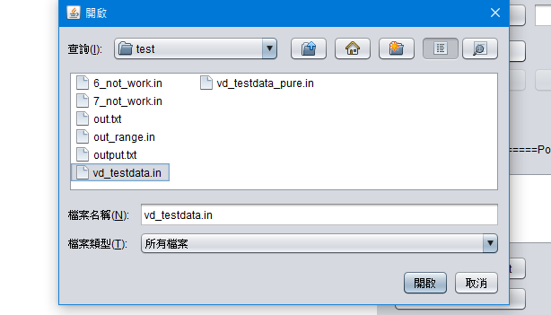

軟體安裝
需事先到Java官網安裝，Java SE Development Kit (JDK)軟體。
安裝完畢後，直接點擊資料內" VoronoiDiagram.jar "就可執行本程式。
使用說明
- 選擇資料輸入方式
- 畫布輸入: 從畫布直接用滑鼠點擊畫布產生測試點
- 檔案輸入: 直接點選 "Read From File按鈕"，即可選取資料，下方"Last/Next Data按鈕"可選取輸入測資
- 隨機產生輸入: 在"Random Point按鈕旁的白色方框"輸入需要產生點的數量，在按下"Radom Point按鈕"即可隨機產生測試資料
- 設定線與點的顏色: 在介面右邊的Setting進行設定
- 執行
- 直接執行:點擊"Run按鈕"可直接顯示結果
- 每個步驟執行:點擊"Step by Step按鈕"可看Divide and Conquer的每個步驟執行的結果
- 輸出結果: 點擊"Out the result按鈕"即可輸出特定格式輸出檔案
操作步驟
- 可讀取測試檔案(vd_testdata.in、vd_testdata.invd_testdata_pure.in)
- 可讀取輸出結果檔案(test/out.txt)
檔案
- 大小 600*600
- 滑鼠可在畫布上自由點選，點擊後，點的座標資訊會加入右方Point List 白色方框中
- 畫布下方顯示目前座標
- Point Color: 設定點顏色
- VD Line Color1: 設定Divide and Conquer後，左邊Voronoi Diagram顏色
- VD Line Color2: 設定Divide and Conquer後，右邊Voronoi Diagram顏色
- CH Line Color1: 設定Divide and Conquer後，左邊Convex Hull顏色
- CH Line Color2: 設定Divide and Conquer後，右邊Convex Hull顏色
- HP Line Color2: 設定Divide and Conquer後，右邊Hyper Plane顏色
- HP Line Color2: 設定Divide and Conquer後，右邊Hyper Plane顏色
- Random Point: 在左邊輸入數量，可產生相對應數量的點在畫布上
- Read From File: 點擊之後，會跳出選擇檔案視窗，選擇測資檔案即可輸入檔案測資 
- Last/Next Data: 可選擇從檔案輸入測資，如測資有數筆，則可前後選擇，相對應檔案名稱與目前在第幾筆測資與總共幾筆測資會顯示在下方
- 白色方框: 會顯示目前畫布上所有點的位置
- Remove Select Point: 可從白色方框選取點，在點擊此按鈕，則可將此點做刪除動作
- Clear All: 在點擊此按鈕，可將所有畫布做清除
- Run: 直接執行此程式
- Step by Step: 逐一執行每個步驟
- Out the result: 將結果輸出為檔案
各物件說明

- 畫布
- Setting
- Generate Point
- Point List
- Excute